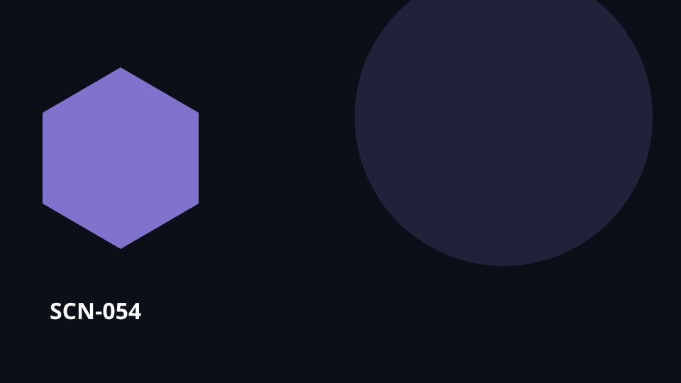

Starts withA choice that needs to be made

SCN-054 · Choose & Govern
A museum considers buying a masterpiece with a twelve-year gap in its provenance
The piece would be a major acquisition, but the legal and ethical risk is real. The committee must compare cultural value, provenance, cost, uncertainty, and the possibility of further research.
FindUnderstandLearnCollaborateChooseActRespondRemember
← Back to the full MosaicWhat can get lost
Evidence, arguments, disagreements, and reasons for a choice become detached from the decision and its consequences.
Koali keeps connected
The value is not any one isolated feature. It is preserving the same context across artwork → … → conditions so knowledge, people, choices, work, and memory remain connected.
Flow
artwork → criteria → provenance → risks → options → decision → conditions
Transferable toMuseums · Collections · Complex Procurement